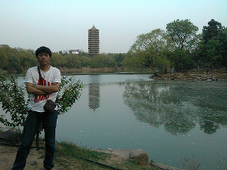

首页 | 香农信息 | 李嘉图经济 | 若愚免费定位 | 若愚晒晒晒 | 联系我们 | 若愚论坛
香农信息涵盖专业：
香农信息涵盖专业：
通信与信息系统 信号与信息处理 电子通信工程
为了满足广大考生的愿望，持续提供大量免费的基础资料供大家下载：
http://pan.baidu.com/share/link?shareid=418837&uk=3928105009
2014香农信息的公开讲座我们将在优酷网发布届时会将视频
上传到这里请大家关注！！！
同时为了满足少部分考生希望得到更加优质的资料，我们组织同学
编写香农信息复习全书（非卖品，专供定制化服务）：正在制作，稍后有视频介绍
a 首先由香农信息的讲师和参加的学生一起用2-3天根据个人情况制定专业课复习
计划，然后选出最优的个性化方案
b 在根据定制化个人计划进行学习，具体如下：
1 每两周发布一次专业课视频 -> 根据自己的问题提到我们的论坛 -> 有辅导
讲师对你个人的问题做解答
2 每一个月进行一次月考 -> 月考之后进行总体排名 -> 针对个人出现的学习和
心理问题进行论坛和邮件定制化辅导
3 每三个月进行一次深入沟通 -> 并制定个人下一个阶段的任务 -> 迭代执行并由讲
师进行跟踪辅导
状元是我们唯一推出定制化服务（效果自己感受，口说无凭）
1> 香农信息复习全书精装打印版（非卖品，仅针对增值服务客户）
2> 所有香农信息的加密视频（基础 -> 强化 -> 冲刺）
3> BBS论坛会员资格（辅导答疑资格仅针对会员）
4> 邮件私密问题辅导（考研过程中，你不想在论坛说的，可以邮件咨询师兄）
5> 手机电话固定时间可以联系（当你有着急的问题时，可以直接打电话）
6> 1V1公共课策划辅导
7> 香农信息复试增值辅导免费
适用人群：本科期间基础不佳，觉得自己自学稍微吃力，希望有专业团队帮助
的同学，有专业团队总结的资料和讲解能节约自己宝贵时间，从而在数学上多
努力加大成功机会的同学
PS:
1 香农若愚复习全书打印版属于非卖品配套我们的定制化服务而编写
2 香农若愚所有解释权归若愚教育所有，特殊情况允许分期付款
3 考生的效果和质量随时可以由个人反应到群里，受广大考生的监督
香农信息只提供高端的定制化服务，因为我们坚信高端来源于对自己实力的自信：
定制化服务名称： 状元 价格：待定
定制化服务优势：仅推出高端价位的增值服务，一方面证明我们的自信，我们值得
这个价格，另一方面，高端就意味着很多学生不会参加，没关系，我们只用心负责
信任香农信息的同学，哪怕只有一个人参加（事实证明已经有人在3月中旬预约了）
我们也会将高端视频和服务坚持下去，坚持以考生为本，梦想是注定孤独的旅程
坚持！！！
收费方式：
a 一次付清：
对于一次性付清的同学，为了答谢对于你们对我们香农信息团队的信任，提供“暑期”
海大游，直接与辅导老师面对面，进行深入沟通，并且给予一系列优惠政策，比如
优先解决个人习题问题等
b 按阶段付费（减少个人损失）：
若愚首创按阶段付费，分两阶段付清，第一阶段是基础和强化，第二阶段是冲刺，
但要强调的是，对于这部分同学，我们也很理解您的情况，所以才贴心的推出按阶段
服务，但是如果你购买的是按阶段服务，我们的视频配套复习全书精装打印版并不会
给大家复印完全，只会复印第一阶段的内容，针对第二阶段的内容如果您觉得效果很
好，选择续订，您只需再出邮费，打印费用由我们承担，我们会将剩余部分打印出来
邮寄给您，继续开始第二阶段的课程
小李：
个人描述：信号专业，大四，专业课135+
兴趣爱好：篮球，刷机
座右铭：活着就为了改变世界
picture：

小马：
个人描述：信号专业，大四，专业课140+
兴趣爱好：听音乐，看小说，逛网页
座右铭：天道酬勤
picture：
若愚使用和声明 | 若愚团队 | 若愚的成长 | 若愚实用链接 | 若愚新鲜事 | 若愚团房 | 和若愚沟通 | 加入若愚
Copyright © 2011-2013 中国海洋大学考研若愚教育 RuoYu 保留所有权利